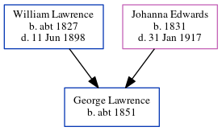

M. Detrich (née Eva)
| [ Calendar ] | [ Surnames Index ] | [ Census Index ] | [ Family History ]She and had 1 child with Senes Detrich: Ottmar Dietrich.
Children
- Ottmar Dietrich was born on Nov 15, 1836
Family Tree
Generated by ged2site. Last updated on Jun 13, 2024